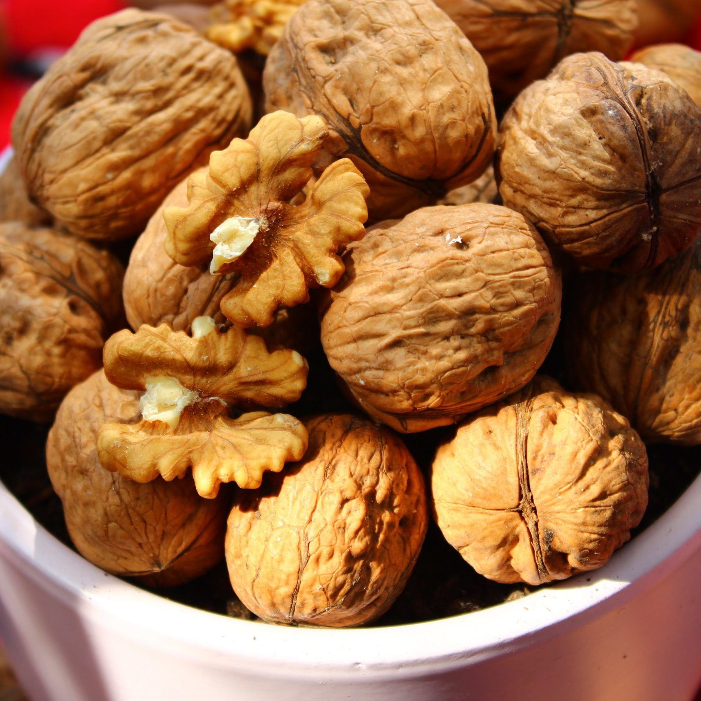
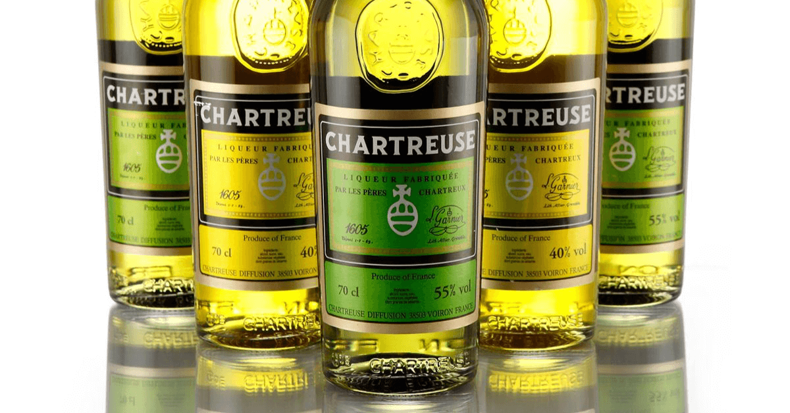
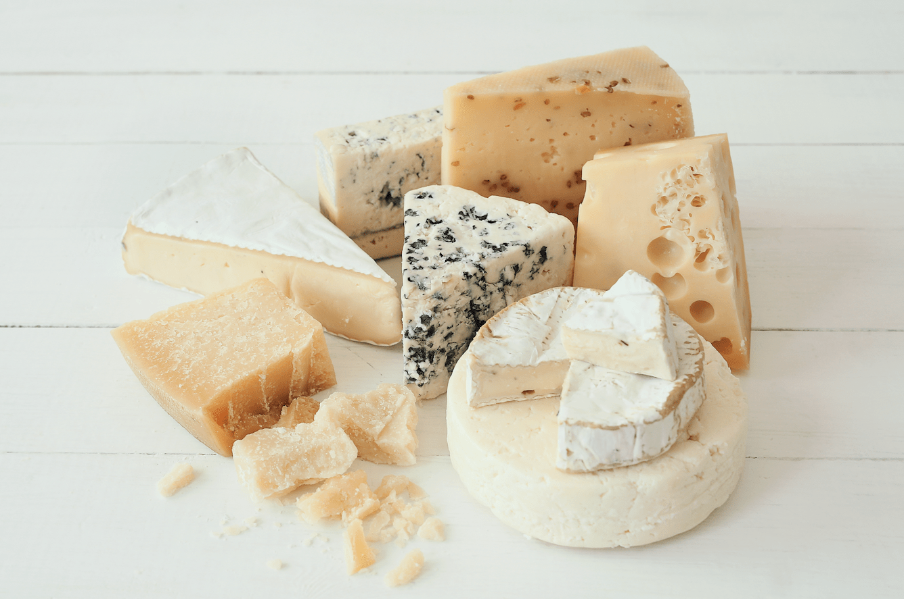
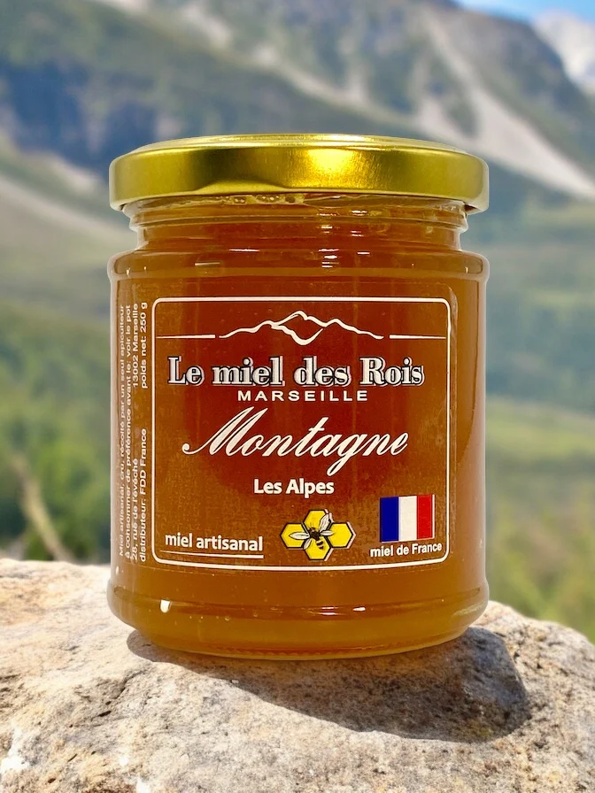

Bienvenue à Grenoble, Terre de Saveurs et de Traditions
« Grenoble et la cuisine, pas seulement une histoire de tacos. »
Ce site présente l'histoire culinaire grenobloise, des recettes traditionnelles, des spécialités locales et des ressources pour en savoir
plus. Il s'agit d'un projet de groupe destiné à valoriser les produits et savoirs-faire locaux. Alors n'hésitez plus, prenez votre vélo et venez découvrir la
cuisine de Grenoble !
Histoire culinaire de Grenoble
Située entre montagnes et vallées, Grenoble a toujours été une terre de passage et d’échanges.
Sa cuisine s’est façonnée au fil des siècles à la croisée des influences alpines, savoyardes et italiennes.
Du plat paysan mijoté sur le poêle à bois aux spécialités fines servies dans les restaurants d’aujourd’hui,
la gastronomie grenobloise raconte avant tout une histoire de simplicité, de terroir et de partage.
Des racines paysannes et montagnardes
Autrefois, les habitants du Dauphiné vivaient principalement de leurs récoltes : pommes de terre, noix,
châtaignes et fromages. Les repas étaient simples mais nourrissants, composés de produits locaux
et de saison. C’est dans ce contexte qu’est né le gratin dauphinois,
un plat emblématique devenu aujourd’hui un symbole de la région.
Entre Savoie et Italie
Proche de la frontière italienne, Grenoble a hérité d’une part du raffinement des pâtes fraîches et des
ravioles, tout en conservant la rusticité des plats savoyards à base de fromage fondu.
Les marchés de la ville, comme celui de l’Estacade, témoignent encore de cette diversité :
produits de montagne, charcuteries, huiles d’olive et vins de la vallée du Rhône s’y côtoient.
Une cuisine entre tradition et modernité
Aujourd’hui, la cuisine grenobloise s’inscrit dans une démarche durable :
circuits courts, produits biologiques et valorisation du patrimoine local.
De jeunes chefs revisitent les recettes d’autrefois en y ajoutant une touche contemporaine,
prouvant que la tradition peut parfaitement s’accorder à la créativité.
« Grenoble, c’est le goût des montagnes et la chaleur du partage. »
— Expression locale inspirée des marchés du Dauphiné
Menu grenoblois traditionnel
Découvrez un menu typique de la région grenobloise, composé de trois plats emblématiques
qui mettent en valeur les produits du Dauphiné.
Entrée : Ravioles du Dauphiné
Fines pâtes farcies au fromage et aux herbes, servies gratinées ou en bouillon.
Ingrédients (pour 4 personnes)
10 plaques de ravioles du Dauphiné
20 cl de crème fraîche
1 noix de beurre
Sel, poivre, ciboulette
Préparation
Préchauffez le four à 180 °C.
Dans un plat beurré, alternez une couche de ravioles et une couche de crème.
Salez, poivrez et enfournez pendant environ 15 minutes.
Parsemez de ciboulette fraîche avant de servir.
Plat principal : Gratin dauphinois
Un plat emblématique à base de pommes de terre, crème et ail, sans fromage.
Ingrédients (pour 4 personnes)
1 kg de pommes de terre (variété à chair ferme)
40 cl de crème liquide
1 gousse d’ail
Sel, poivre, noix de muscade
Préparation
Préchauffez le four à 180 °C.
Épluchez et coupez les pommes de terre en fines rondelles.
Frottez le plat à gratin avec la gousse d’ail, puis disposez les pommes de terre.
Versez la crème, assaisonnez, puis enfournez environ 1 heure.
Le gratin est prêt lorsqu’il est bien doré et fondant.
Dessert : Noix de Grenoble caramélisées
Noix locales torréfiées et enrobées d’un caramel doré et croustillant.
Ingrédients (pour 4 personnes)
150 g de cerneaux de noix de Grenoble
100 g de sucre
2 cuillères à soupe d’eau
Préparation
Dans une casserole, faites chauffer le sucre et l’eau jusqu’à obtention d’un caramel doré.
Ajoutez les noix et mélangez bien pour les enrober.
Versez sur une feuille de papier cuisson et laissez refroidir.
Dégustez nature ou émietté sur un dessert.
Produits & spécialités locales
Grenoble regorge également de nombreux produits et spécialités locales notamment liés à sa situation géographique. En voici quelques exemples.
Noix de Grenoble

La Noix de Grenoble est un produit AOP Appellation d’Origine Protégée (auparavant AOC). Cette appellation garantit un terroir qui donne à
cette noix son goût et sa spécificité. Le territoire où poussent les vergers est situé dans la vallée de l’Isère. Il procure aux arbres un climat assez
humide et venté qui leur convient parfaitement. Les techniques de récolte moderne permettent de ramasser les fruits rapidement puis de les nettoyer,
les trier et commencer le séchage dans les 36h. IL existe aujourd'hui 3 types de noix, la Mayette (plus rare), la Parisienne (ronde et fine) et
la Franquette(plus dure et allongée).
Aujourd’hui ce sont les variétés Franquette, Mayette et Parisienne qui sont cultivées, mais avant cela elles étaient bien plus nombreuses.
Liqueur de Chartreuse

La chartreuse est une liqueur fabriquée à la distillerie d'Aiguenoire à Entre-deux-Guiers en Isère, en plein cœur du massif de la Chartreuse,
sous la supervision des moines de la Grande Chartreuse. Liqueur à très haut degré d'alcool (55° pour la verte), sa vente est la principale ressource
financière des chartreux (un ordre religieux catholique contemplatif ).
Fromages alpins

Les fromages d’alpage, véritables trésors des montagnes, sont fabriqués avec le lait des troupeaux qui paissent dans les pâturages d’altitude en été,
offrant des saveurs riches et authentiques. Ils incarnent le savoir-faire ancestral des bergers et reflètent l’unicité des terroirs alpins, de la Savoie
aux autres régions des Alpes.
Miel de montagne

Le Miel de montagne est un miel de Savoie provenant de toutes fleurs. Son goût est savoureusement sucré et fleuri.
Avec l’arrivée du printemps, les fleurs des alpages fleurissent jusqu’en septembre. Les abeilles des ruches de la Miellerie des Arves butinent durant cette période
pour obtenir une récolte du Miel de Montagne pendant l’été.
Découvrir des entreprises spécialisées dans la gastronomie locale